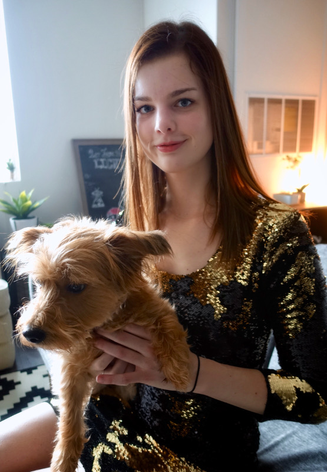
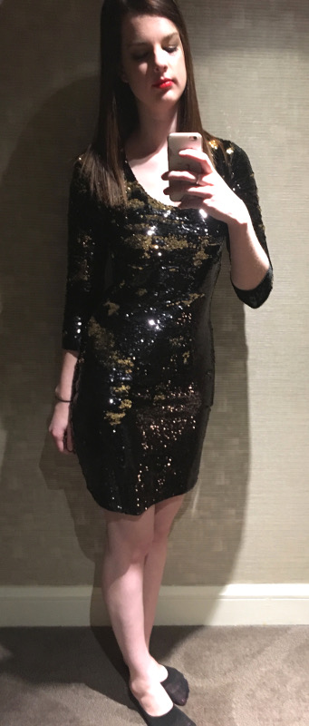

I’ve always wanted the chance to wear a sequin dress, and an upcoming Las Vegas girls' trip was the perfect excuse to make one. I thought it would be a difficult project, especially because I was in a time crunch, but it ended up being much easier than expected.
Why does my dog never look at the camera
I decided I wanted to attempt reversible sequins, the kind that are two different colors depending which side is pushed up or down. I like how reversible sequin dresses look because the pattern is always random since it depends on which sequins are pushed up or down. I chose the McCall’s 6886 pattern (variation C) because it was easy, simple, and modest. I wanted a simple design because the sequins are already pretty flashy and attention-grabbing, and it needed to be simple because I’d never worked with sequins before and I knew I was in for a challenge. I should preface this post by saying I'm not an expert seamstress by any means, so I cut a lot of corners (no pun intended) while making this dress.
Classy hotel mirror photo before going out
The good:
-
I didn’t replace the needle on my sewing machine and it didn’t break! I just made sure to sew at a slower speed than normal. A few times the machine felt like it was going to get stuck, so I would just turn the wheel on the side manually until I got through the tough spot.
With this fabric from JoAnn, I didn’t need to hem the bottom, the neckline, or the end of the sleeves. I thought it might start raveling throughout the night but it didn’t! It would probably end up looking better if I did hem them, but by the end I was so tired of trying to sew with sequins that I decided it didn't matter as much.
The pattern is very easy to modify to fit as you want. There are only 4 pieces to cut out and no complicated seams or anything.
Since this fabric is mostly made of plastic, it’s always wrinkle free!
The bad:
-
My thread broke a few times when sewing through sequins, I think because the thread's tension was pretty high and the it would get “stuck” in a sequin.
I ripped out a seam on the sleeves because they were too tight. Ripping out the seam is much harder than normal fabric because the thread gets caught in the sequins and doesn’t want to come out. Also the sequins where I ripped the seam from were a bit damaged, but not too noticeably.
The sequin fabric is very slippery and doesn’t want to stay where you pinned it. When sewing the side seams, the first one I started at the top and by the time I got to the bottom the hem didn’t match up! The second time, I started at the bottom hem so it would match up.
-
Sequins all over my apartment! I even found some in my dog’s fur! Almost a month later I still find rogue sequins when I clean.
The sequin fabric is super heavy so I’m afraid if I hang it up, the dress will get stretched out of shape
-
I have no idea how to wash this.
Non-sequin side of the fabric, it didn't ravel at all!
The ugly:
-
I didn’t have time before my Vegas trip to remove sequins from the inside seams, or sew a lining, or cover up the seams. After a few hours of dancing in this dress my skin was irritated, especially on my arms. When I was making the dress and constantly putting it on and taking it off, my arms got pretty scratched from the sharp sequin edges.
-
I didn’t use stretchy fabric so the dress is VERY difficult to put on and take off. Also, I couldn’t make the dress any more form-fitting because of this. Sewing a zipper would’ve been really difficult because of how slippery the sequin fabric is. In addition, I couldn’t raise both my hands over my head at the same time because of how inflexible the fabric is.
Overall, the materials for the dress only cost me about $45, and it’s long enough for my tall frame. I learned a lot while making this dress and had fun wearing it in Vegas! Below is a short video of the reversible sequins in action.
Questions? Comments? Don't hesitate to contact me!